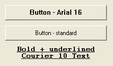

SetGadgetFont()
Syntax
SetGadgetFont(#Gadget, FontID)Description
Changes the font of the specified gadget.
Parameters
#Gadget The gadget to use. If this parameter is set to #PB_Default, the font used by newly created gadgets is changed. FontID The font to set. The FontID() function can be used to easily obtain a valid FontID. If this parameter is set to #PB_Default, then the system default font will be used.
Return value
None.
Example
If OpenWindow(0, 0, 0, 222, 130, "SetGadgetFont", #PB_Window_SystemMenu | #PB_Window_ScreenCentered) If LoadFont(0, "Arial", 16) SetGadgetFont(#PB_Default, FontID(0)) ; Set the loaded Arial 16 font as new standard EndIf ButtonGadget(0, 10, 10, 200, 30, "Button - Arial 16") SetGadgetFont(#PB_Default, #PB_Default) ; Set the font settings back to original standard font ButtonGadget(1, 10, 50, 200, 30, "Button - standard") If LoadFont(1,"Courier",10, #PB_Font_Bold | #PB_Font_Underline) SetGadgetFont(#PB_Default, FontID(1)) ; Set the loaded Courier 10 font as new standard EndIf TextGadget(2, 10, 90, 200, 40, "Bold + underlined Courier 10 Text", #PB_Text_Center) Repeat : Until WaitWindowEvent() = #PB_Event_CloseWindow EndIf

See Also
GetGadgetFont(), FontID(), LoadFont()
Supported OS
All